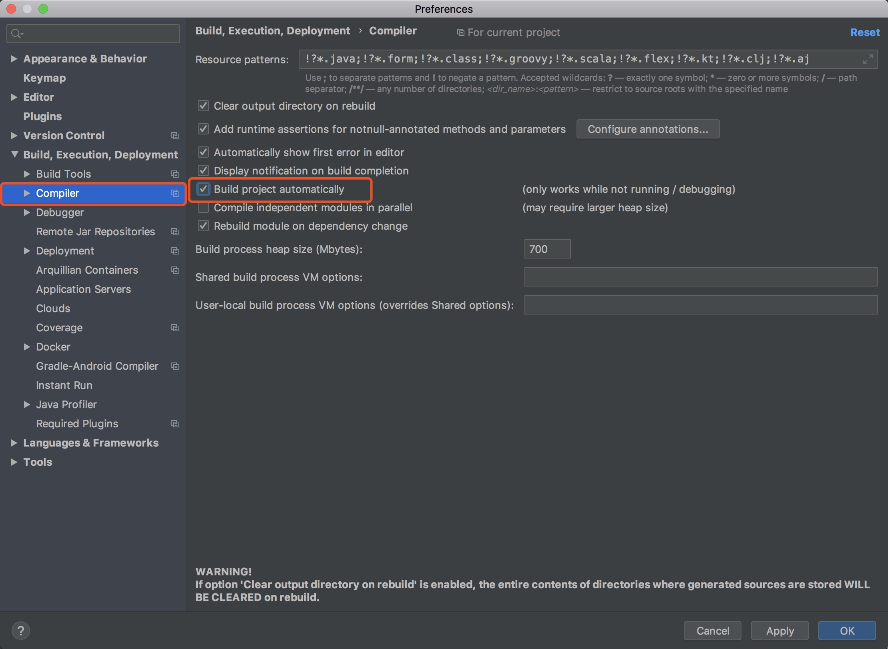
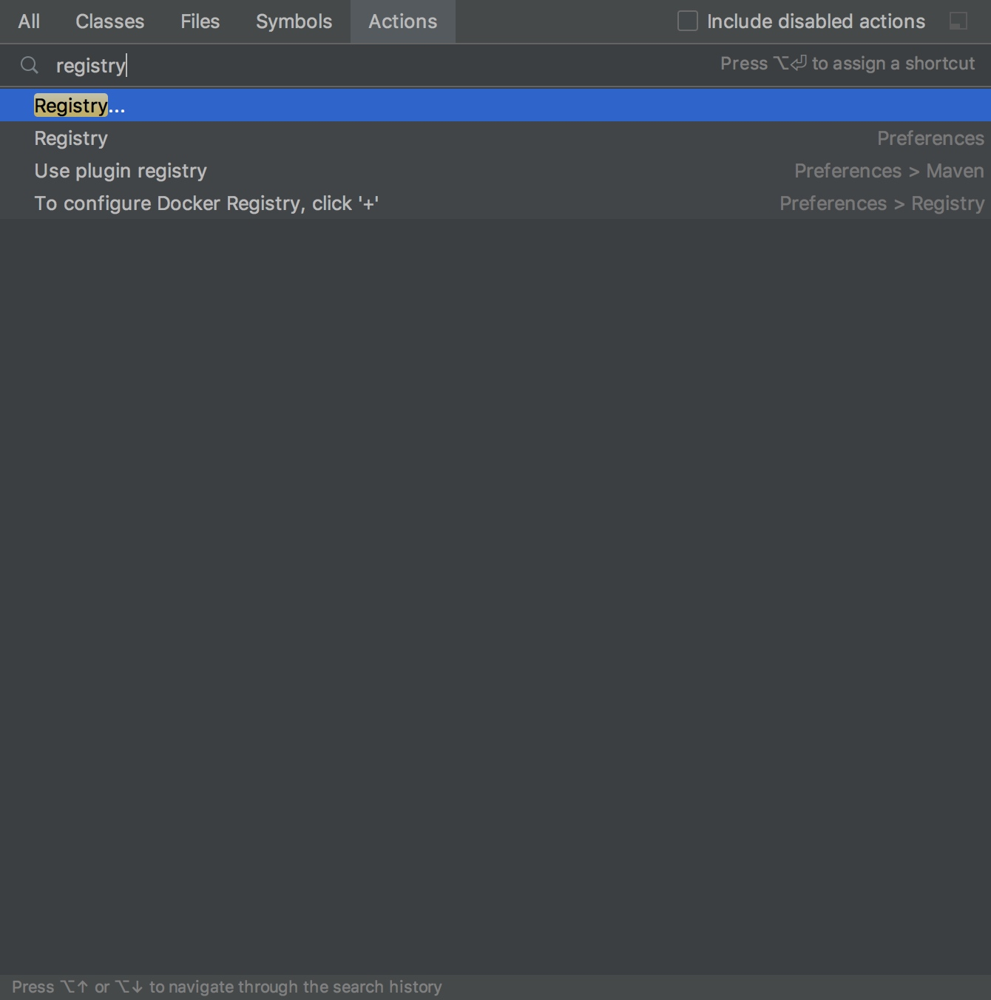
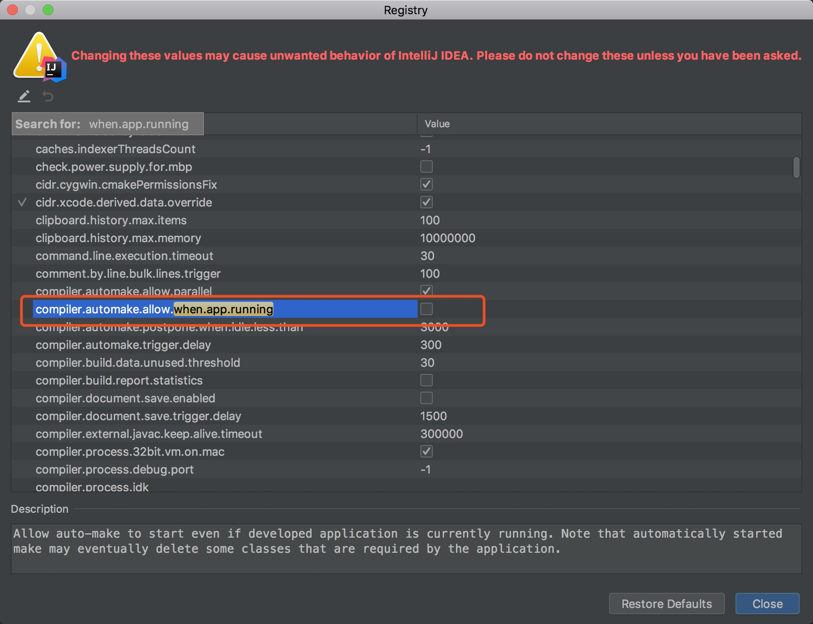

最近调试代码需要起服务并修改代码这就导致重复工作，目前是修改服务器配置，即当idea失去焦点时更新类和资源，但是这种只支持在debug模式且是在idea失去焦点才会触发热部署，这就相对加载的慢了。此法的配置方法：
Run –>Edit Configgurations

如果你sever 选项卡下没有On frame deactivation，那么就需要配置 Deployment 选项卡，点击右边绿色+，选择自己对应的项目，建议选择带 exploded， 这个相当于改 Tomcat 的 CATALINA_HOME， 效率比较高。


选择好后， 删掉默认的Build， 提高效率
虽然配置了热部署但是感觉还是有点慢，发现idea没有默认自动编译，因此开启后将省去了每次修改代码又要重新启动的步骤：
*进入设置setting，Build,Execut, Deployment -> Compiler 勾选右侧的Build Project automatically

- 开启项目运行时自动build，在打开的页面上快捷键ctrl + shift + a 搜索命令：registry –> 勾选compiler.automake.allow.when.app.running*


完
本文由 Sajor
创作，采用 知识共享署名4.0 国际许可协议进行许可
本站文章除注明转载/出处外，均为本站原创或翻译，转载前请务必署名
最后编辑时间为: 2019-08-16T21:43:04+08:00